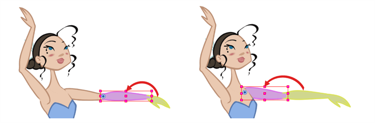
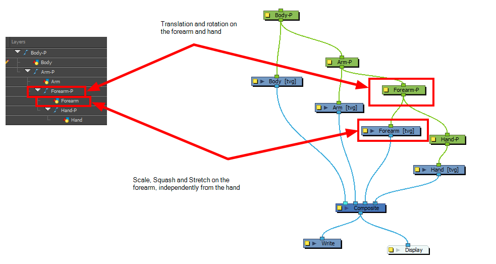
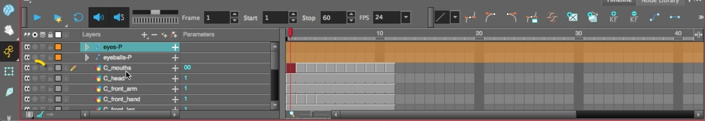
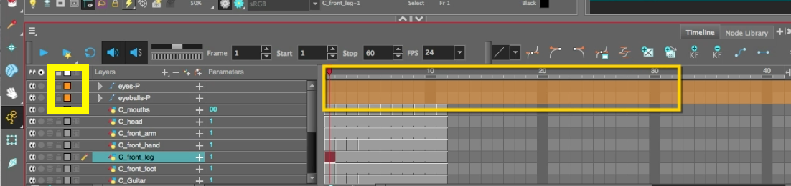
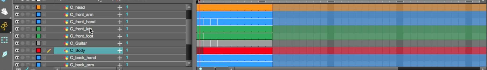
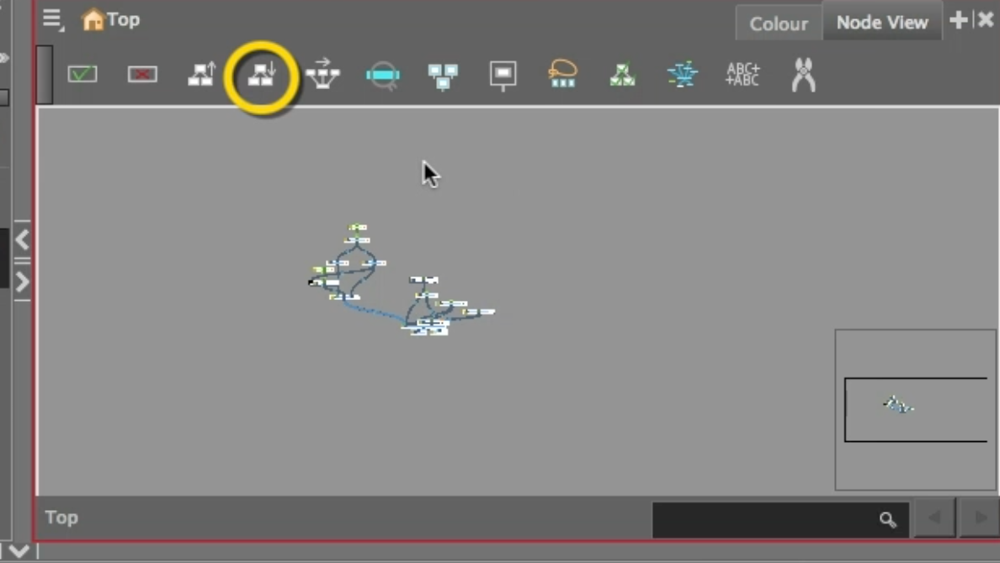
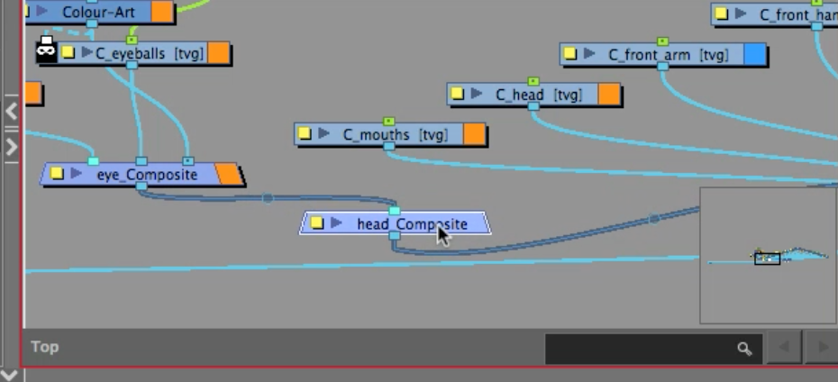
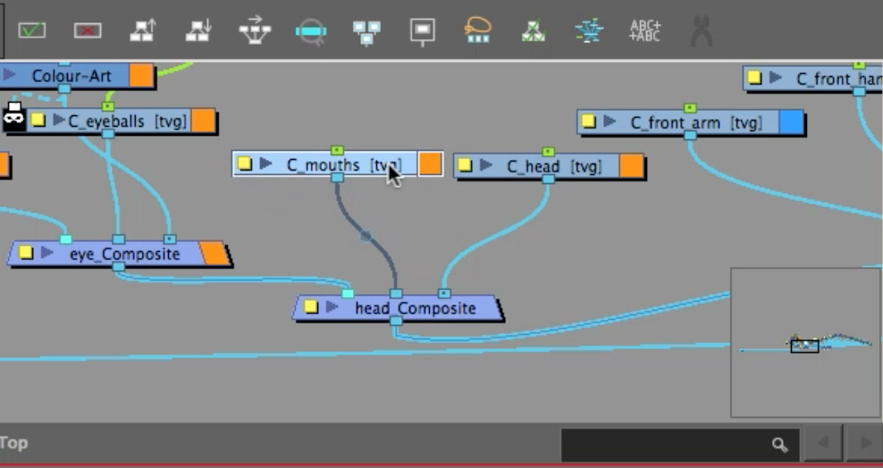
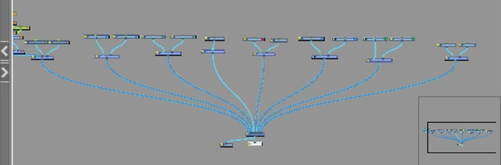
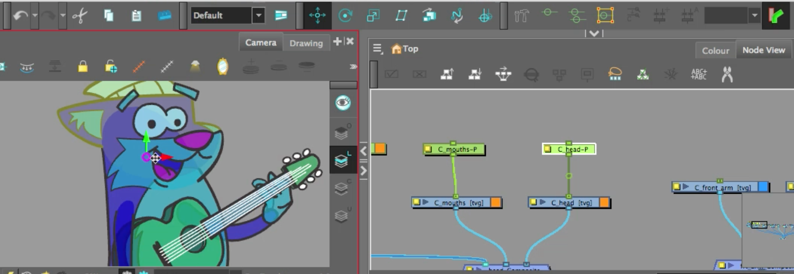

About this Lesson:
Earlier in this course you learned how to rig eyes and applied lip-sync to the character CNote. In this lesson you will learn how to set the CNote character for rigging.Harmony is a great tool for building characters. You can use different techniques and features to break down your puppets. This chapter will guide you through all the steps to create a complete simple rig. Harmony allows you to create very advanced puppets using deformations, hierarchies and z ordering. As you practice and get familiar with those concepts, you will be able to develop more.
Lesson Duration: 4 hours
Harmony Topics:
- Cut-Out: Harmony provides some great tools for rigging and animating cut-out character models. You can make simple rigs or give your characters flexible capabilities using peg hierarchies, groups, composites, cutters, and deformers, among other things. You can create basic animations with the Transform tool, or more advanced animation with Inverse Kinematics as well as Bone and Curve Deformers. Harmony also supports advanced onion skin and image swapping features to help you animate efficiently and quickly.

- Pivots: Even with a complex hierarchy, a rig is useless without positioning the proper pivot points. This will allow the puppet's pieces to rotate correctly. The arm needs to rotate from the shoulder and stay attached to the torso, so its pivot point needs to be positioned accordingly. A good way to achieve this is to position the pivot point exactly in the center of the articulation. The initial position of the pivot point is always at the center of the scene. Sometimes there will not be an obvious place of rotation to place the pivot point, but it's a good idea to reposition the pivot to the best transformation point. For instance, the master peg, which generally controls the entire rig, is often best positioned between the character's feet.
- About Peg Hierarchy Rigs: Peg layer are useful when you are doing more advanced puppet rigging. Peg layers are trajectory layers that do not contain drawings. They are motion paths that you can use to control your entire puppet or advanced hierarchies.
Parenting a drawing layer to a peg layer allows you to divide your motions on two separate levels. You can scale a body part up the chain of pegs directly on the drawing layer. This way, you do not affect any child layers that could be attached to that part. Then, you can perform your translation and rotation on the peg layer so all the parts attached to that peg layer follow the same trajectory.

Task:
-
Download the support files from the Lesson Files.
- Review the Assessment Rubric found in the Lesson Files.
-
Watch, complete and take notes on the Rigging A Character video tutorial and the topics presented in this lesson. Taking notes in your sketchbook/notebook on how to use Harmony and any animation terminology will help you prepare for your certification exam at the end of this course.
Please Note: The cut out pieces of CNote are set up to be transparent to help you learn how to set up the rigged character.
Part 1 - The Character construction in the Timeline:
-
Launch Toon Boom Harmony.
- In the Welcome Window, open the file named: 12_rigging_cnote.
- Be sure to save your Harmony file as: YourName_Rigging in your Documents folder.
- Take some time to investigate the construction of the Timeline layers. Your Timeline should look like this:

- Use Solo mode to preview the art layers in the Camera view.
- Toggle through the mouth shapes, completed in a previous lesson.
- Toggle through the eyes, completed in a previous lesson.
- Check out the new art layers.
Hint: shortcut K allows you to see enable and disable the visibility of invisible strokes
- Take some time to look at how each cut out art has been created and set up. Some art layers have numerous drawing substitutions created. Some art will be missing line art, as that part of the art will be hidden when the character is fully composed.
- Also note that the eyes, eyeballs layers have been labelled orange on the timeline. This way you can visually mark your work.

- Select all the C_mouths layer and C_head layer and also assign an orange label, similar to the eyes layer and eyeballs layer.
- You can select numerous layers by selecting one layer, holding shift on the keyboard, and then clicking on the other layers.
- Select all the associated body parts that make up the legs and assign a green label by selecting the square to the left of the layer name.
- Select all the associated body parts that make up the arms and assign a blue label by selecting the square to the left of the layer name.
- Select all the associated parts (including the tail) that make up the body and assign a red label by selecting the square to the left of the layer name.
- Leave the guitar labelled grey.

Part 2 - Node View:
- Switching to Node view after you design a character in Timeline mode can get a little messy.
- Let's clean up your Node view.
- In the Node view, zoom out using the 1 key until you see all of the Nodes.
- Drag your cursor over all the Nodes
- Along the top menu in the Node view, select Order Node View Down.

- Leave the parameters at the default, click OK.
- Now your Node view will be cleaned up, in a tree like shape.
Hint: Space bar is freehand, 1 is Zoom out and 2 is Zoom in. These shortcuts will help you navigate the Node view.
Creating a new Composite Node:
- Note there is only one main Composite for the character.
- Select, copy and paste the existing Composite node.
- Double click the new composite and rename it to Head_composite. Set the mode to passthrough (similar to the Dynamic Eyes lesson).
- Reposition the new Head_composite where the head art nodes are. Hold option (macOS) or Alt (windows) and drag it between the eyes_composite and the main composite.

- Now drag the waypoints from the Mouths layer node and the Head layer node to the Head_Composite.

- Select everything connected to the Head_composite and reposition to the far left.
- Make sure the Write and Display nodes are close to the main composite.
- Select the Head_composite, copy and paste it in the node view.
- Double click the new composite and rename it to Front_arm_composite. Set the mode to passthrough.
- Reposition the new Front_arm_composite where the front arm layer node is. Hold option (macOS) or Alt (windows) and drag it between the Front_arm_composite and the main composite.
- Now drag the waypoint from the front hand layer node to the Front_arm_composite.
- Reposition in a new location in the Node view.
- Paste the composite node again (as it is still saved in our Harmony clipboard).
- Double click the new composite and rename it to Front_leg_composite. Set the mode to passthrough.
- Reposition the new Front_leg_composite where the front leg layer node is. Hold option (macOS) or Alt (windows) and drag it between the Front_leg_composite and the main composite.
- Now drag the waypoints from the leg layer node and the front foot layer node to the Front_leg_composite.
- Reposition in a new location in the Node view.
- Repeat these above steps to create composites for all of the body parts., including:
- Body Composite. (include the Tail layer)
- Guitar Composite
- Back Leg Composite
- Back Arm Composite
- Your Node view should look like this:

- Organize the layout of the Node view.
- In each composite, select the art layer nodes and press CMD+Shift+P (macOS) or Ctrl+Shift+P (windows) to add a peg to each node.
- Using the Translate tool reposition the pivots points for the pegs in the Camera view. Watch the video for pivot point positioning.
Hint - Using Solo mode will assist in viewing the back art.
- Most pivot points should be positioned as follows:
- Arms - Shoulders
- Hands - Wrists
- Legs - thigh
- Foot - ankle
- Guitar - the main strumming area
- Body - base of the character's bottom
- Tail - connected to bottom
- Mouth - which should be positioned to the side of the mouth.
- No pegs for the non-character art.

Part 3 - Presenting your work:
- Take a screenshot of your Node View demonstrating:
- Node View:
- Main Composite
- Head Composite
- Front Arm Composite
- Back Arm Composite
- Front Leg Composite
- Back Leg Composite
- Guitar Composite
- Body Composite
- Prop art layers
- Camera View with the Pivot Point set to the Body Composite
- Timeline with layers correctly labelled in Red, Orange, Blue, Gray and Green.
- Node View:
- Submit Rigging Layout screenshot below.